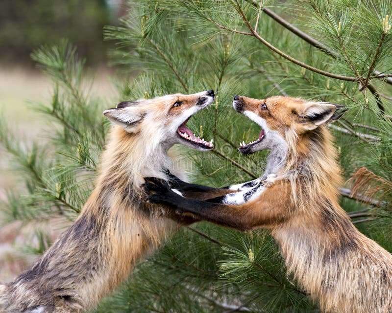

Decides ser cauteloso. No conocés a estos zorros y aunque el cuervo te trajo aquí, necesitás entender primero cómo funciona esta comunidad antes de acercarte.
Te escondes entre los arbustos y observas. Los zorros interactúan con naturalidad. Comparten comida, juegan, se cuidan unos a otros. Es evidente que esta no es una manada común - es un refugio.
Pasas horas observando. Ves cómo una zorra mayor cuida a los heridos, cómo los jóvenes enseñan a los más débiles a cazar. Este lugar fue construido sobre compasión y comunidad.
Pero mientras observas, tu estómago gruñe. No has comido en horas y tu cuerpo está débil. Los zorros del valle tienen comida abundante, pero vos seguís escondido, solo.
Salir de tu escondite y unirte a ellos - la observación te dio confianza
Irte solo - preferís la soledad que arriesgarte con desconocidos